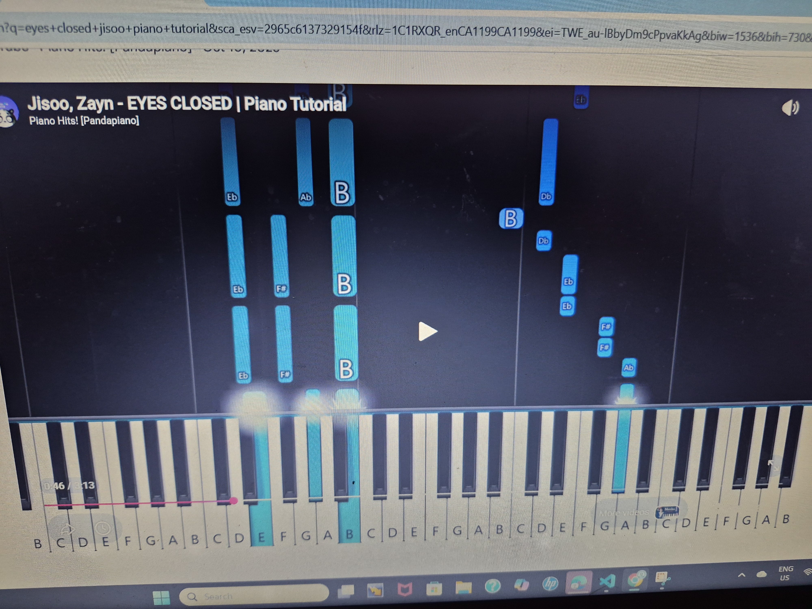
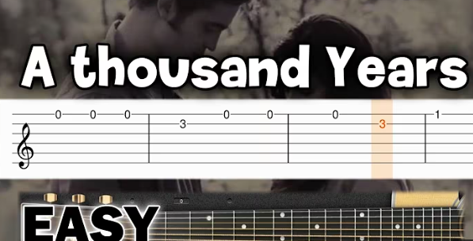
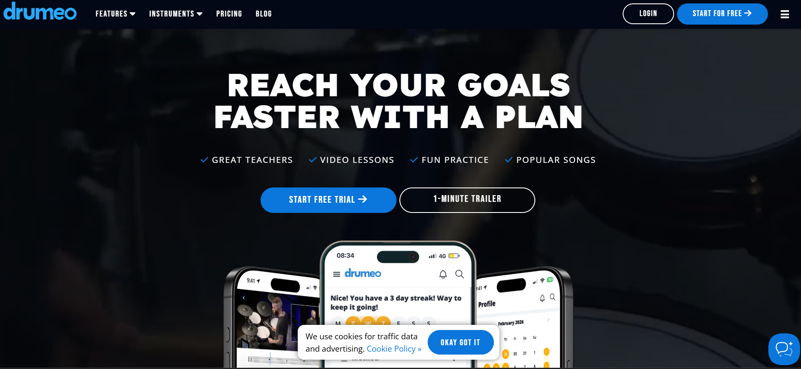

me in June 2026

Statue of me - William Wen (Excelling Highschool student & Robotics + 3D printing leadership)
My name is Michael Ivanov, and I am a 16 year old from British Columbia, Canada. I had began to play music at a younger age of 8 and ever since, I have been OBSESSED with expressing myself through different pieces and songwrites. Originally when I was 5, I began taking piano lessons through the expected method of learning to read sheet music. I wasnt as well able to follow along with what was being taught and eventually, I quit. When I picked up the piano again 3 years later, I began learning how to play using the digital keys method on youtube.
For me, it was much easier to learn how to play if I had a virtual display or animation of the action in front of me. What the Piano digital keys method is exactly, was the display of falling digital notes onto a keyboard (displayed on a screen). As an 8 year old boy, I was told I had a gift to play in such a way but to be honest, I didnt truly believe I did. I simply learned piano using an alternate method from the expected. I believe that everyone is capable of learning how to play an instument if they dedicate enough time and effort into their learning process, as well as if they find methods which work best for them.

This is the exact tool millions of people around the world use to learn and play music !!
One of the quickest and easiest ways to learn and play piano, applies with the usage of this tool. I remember when I began taking traditional piano lessons as a younger kid, I didnt only struggle with reading sheet music, but I also struggled to learn the fingering of different songs. This online digital keys tool for piano, allows you to learn to play pieces with your own fingering methods. Of course, you dont need to know how to read notes either! These type of piano tutorial videos can be found across youtube and many other media platforms as well!
How exactly do I use this tool?
There are many different ways this tool can be used, and there are many many reasons to support why this tool is so useful. Firstly, you can learn way more than just traditional, authentic or classical piano pieces when learning to play. There are many pop, rock, or classical beats that can be learned with this tool. I would guarantee that if you were to search any song to learn on the piano that is taught with this method, there is a 90% chance that you will find a tutorial to your use. In regards to how the tool is used, you would simply follow along with the digital tutorial at your own pace. Many media platforms share the feature of slowing down or speeding up the videos in case the tutorial is not suitable with your learning pace.
Now you try!!!
I encourage you to try and learn these pieces if you have a piano at home. I guarantee you that you could learn both in a day or 2!! WHAT ARE YOU WAITING FOR!!

I only know a little bit of guitar and I learned it with tabs, online and without sheet music. Trust me, this works!
Personally, I really dont understand why anybody would learn guitar using sheet music. The internet has given us so many more productive and funner ways to learn how to play guitar, and practically any other instrument as well. Guitar tab tutorials can be found all over the internet and across many many media platforms. Most of the videos require you to follow along while playing, which is helpful because you gain a better sense of the tempo and rythm of the song. If you are to ever need help with the finger placements while playing the guitar, most videos contain a guitarist following the same tune in the background. You can also learn guitar fingering methods through other tutorials found on the internet.
How do I use this tool?
Much like with the digital keys tutorials for piano. guitar tab tutorial videos can be sped up or slowed down to matkch your learning pace! This is as well fixed with the built in settings on media platforms.
Quick note! I am sorry if this method is not the best for you. I came off of what I learned guitar with, though it is not my main instument. If you have alternate methods that work for you, thats great!!
Some tutorials to get you started!
Cant help falling in love- Elvis

I myself am a drummer and I have been playing since middle school. There are many online sites to help you learn and trust me when I say that Drumeo works!
Drumeo is an online webTOOL that aids you along your drum journey in many ways! It is literally quite possible to learn how to play drums from scratch by only using this tool. The site does not require you to read notes, but to simply understand beats and hitnotes to play along with different tunes. If you are at all uncertain about using the app for certain reasons, you are welcome to take a look through the one minute trailer on the homepage of the web. Free trials are promised as well if you are unable to purchase a subscription. You will be able to find your way through Drumeo as you progress through lessons and other activity. Get your drumsticks, hop on your kit and start learning!
Now how exactly do I use this tool?
You will need to sign in with an account of yours. You will be given many different options around you learning techniques and progress with all lessons. Get started with a free trial today and start drumming!